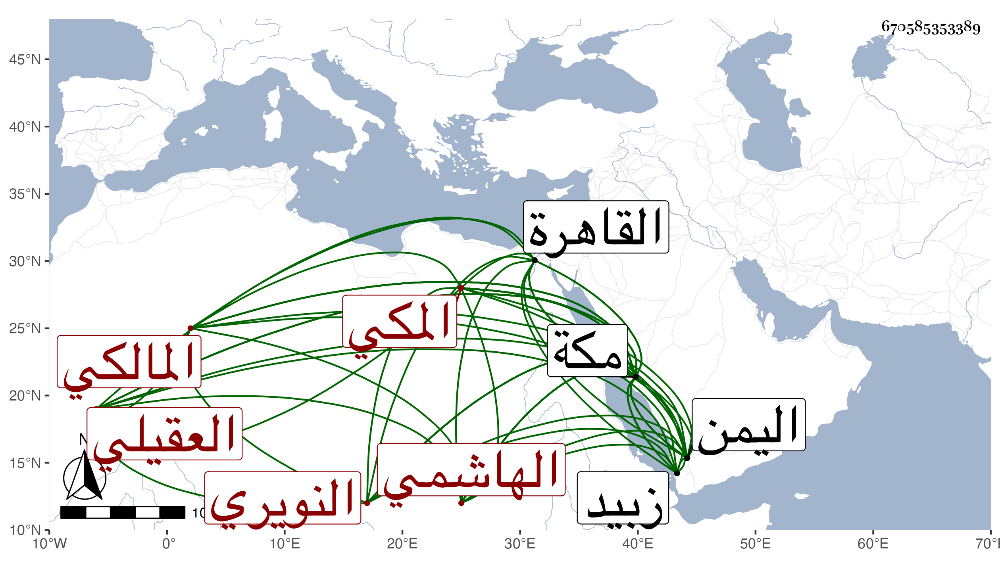

0902Sakhawi.DawLamic.ITO20230111-ara1.EIS1600.670585353389
Biography ID: 670585353389
277
عبد الرحمن بن علي بن أحمد بن عبد العزيز البهاء الهاشمي العقيلي النويري المكي المالكي . ولد في سنة ثلاث وسبعين بمكة وسمع بها من النشاوري وابن صديق وابن سكر وغيرهم وحفظ الرسالة ، وناب في الحكم بمكة عن ابن عمه العز النويري وولي امامة مقام المالكية بعد أبيه شريكا لأخيه الشهاب أحمد الماضي ودخل القاهرة مرتين أهين في الثانية منهما ظلما وناب بها في القضاء بعد ذلك عن الجمال البساطي لينجبر كسره ، ورجع إلى مكة ثم توجه منها إلى اليمن فأقام بها أشهرا ثم أدركه أجله فمات في آخر جمادى الأولى سنة ست بزبيد ودفن بمقابرها رحمه الله وسامحه . ذكره الفاسي في مكة .
